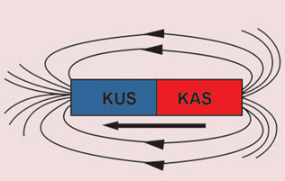
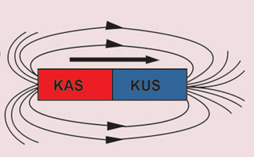

Jaribio namba 2:Kuchunguza mistari ya kani ya sumaku mbili zenye ncha zinazofanana
Lengo: Kuchunguza mpangilio wa mistari ya kani ya sumaku mbili zenye ncha zinazofanana
Mahitaji:
sumaku mche mstatili mbili, karatasi nyeupe, unga wa chuma na meza
Hatua
1. Sambaza unga wa chuma juu ya karatasi nyeupe weka juu ya meza.
2. Panga sumaku mche mstatili mbili juu ya karatasi nyeupe yenye unga wa chuma. Angalia Kielelezo namba 5. Hakikisha ncha zinazofanana zinatazamana na zimewekwa karibu.
3. Sogeza kidogo sumaku moja kuelekea kwenye sumaku nyingine.
Je, nini kimetokea?
4. Tumia programu maalumu au daftari lako kuchora umbo linaloonekana.


Kielelezo namba 5: Mistari ya kani ya sumaku mbili za mche mstatili zenye ncha zinazofanana
Matokeo:Andika matokeo ya jaribio ulilolifanya.
Hitimisho:Andika hitimisho la jaribio ulilolifanya.